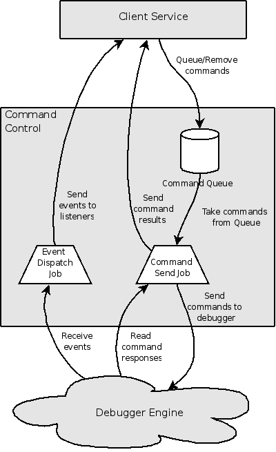

How to write a DSF-based debugger
Summary
DSF
- Customizing, componentization, performance.
- GDB Reference Implementation
Push Down Automata (PDA)
The Push Down Automata (PDA) debugger example is used as the basis for
this tutorial. Before starting the tutorial it is best to
familiarize with the features of the debugger.
Running the Example
Launch the PDA debugger with these twelve "easy" steps:
- Download and install Eclipse development environment, either the Eclipse Classic 3.4 or Eclipse IDE for C/C++ Developers
- Install the DSF SDK feature to build against, by performing
either:
- Using update manager, install the Debugger Services Framework end-user and
extender SDK, found in the Ganymede
Discovery Site under Remote
Access and Device Development.
- Check out org.eclipse.dd.dsf
and org.eclipse.dd.dsf.ui plugins, found in the /cvsroot/dsdp repository under org.eclipse.dd.dsf/plugins
directory.
- Check out the org.eclipse.dd.examples.pda
and org.eclipse.dd.examples.pda.ui plugins,
found /cvsroot/dsdp in the org.eclipse.dd.dsf/plugins
directory.
- Build the PDA plugins.
- Create an instance of an Eclipse
Application launch configuration and launch it in Debug mode.
- Switch to the new Eclipse IDE Application
- Create a new empty project:
- Select the File->New->Project...
action
- Select General->Project
in the New Project dialog.
- Enter a name for the new project (e.g. "PDA")
- Link in the folder with PDA examples from the org.eclipse.dd.examples.pda plugin.
- Right-click on the new Project and select New->Folder
- Click on the Advanced
>> button at the bottom of the New Folder dialog.
- Select the Link to folder in
the filesystem check box.
- Type in or browse to the samples
directory found in the org.eclipse.dd.examples.pda
plugin.
- Open the PDA editor by double-clicking on the PDA file (e.g. fibonacci.pda). See note
below.
- Set a breakpoint in the program by double-clicking in the editor
gutter.
- Launch the PDA debugger
- Set the dsfPerlDebugger
variable to point to the Perl executable in your system.
Variables can be set in the Windows->Preferences->Run/Debug->String
Substitution preference page.
- Create a new launch configuration of type DSF PDA Application
- In the Main tab, enter the workspace path to the program name
(e.g. /PDA/samples/fibonacci.pda).
- Select Debug to
launch the PDA debugger.
- Step, select stack frames, debug...
Note: If the Debug Platform example
plugins (org.eclipse.debug.examples.*) were previously installed in the
same workspace as the DSF PDA example, the two examples will both have
an editor registered for the ".pda" file type. To ensure that the
right editor is opened, right click on the PDA file in the Navigator,
and select Open With->PDA(DSF) Editor. The editor that is
opened should have the DSF-PDA icon:  |
Language
To demonstrate how to write a debugger for Eclipse, we need a
language and a run time to debug. For this example, we chose an
enhanced push down automata (PDA) assembly language and a simple
interpreter implemented in Perl. Each line contains a single operation
and any number of arguments. Our language differs from a standard PDA
in two major ways:
- Our language has a control stack and thus has call-return
subroutines.
- Our language allows data to be stored either on the data stack or
in named variables on the control stack.
Here is an annotated example of the Fibonacci computation (note that
the annotations themselves are not valid syntax in this language – in
this language, all comments must start at column 1 and be the entire
line):
samples/fibonacci.pda
|
|
push 6
call Fibonacci function call with one argument on the data stack
output print result to stdout
halt
#
# f(n) = f(n-1) + f(n-2)
# f(0) = 1
# f(1) = 1
#
:fibonacci
var n define variable n on control stack
pop $n get n from data stack
push $n
branch_not_zero gt0
push 1 f(0) = 1
return return with one value on data stack
:gt0
push $n
dec
branch_not_zero gt1
push 1 f(1) = 1
return return with one value on data stack
:gt1
push $n stack: n
dec stack: n-1
call fibonacci stack: f(n-1)
push $n stack: f(n-1) n
dec stack: f(n-1) n-1
dec stack: f(n-1) n-2
call Fibonacci stack: f(n-1) f(n-2)
add stack: f(n-1)+f(n-2)
return return with one value on data stack
|
Debug Protocol
Our PDA assembly language interpreter can be started in either run
mode or debug mode. When started in debug mode, the interpreter listens
for debug commands on a specified local TCP socket and sends debug
events to a separate local TCP socket. A detailed description of
the protocol can be found in org.eclipse.dd.examples.pda/pdavm/docs/protocol.html,
but the lists below show a quick overview.
The commands include:
- clear N – clear the breakpoint on line N
- data – return the contents of the data stack; the
data is returned from oldest to newest as a single string
“value|value|value|…|value|”
- exit – end the interpreter
- resume – resume full speed execution of the program
- set N – set a breakpoint on line N
- stack – return the contents of the control stack
(program counters, function and variable names); the stack is returned
from oldest to newest as a single string “frame#frame#frame#…#frame”.
Each frame is a string “filename|pc|function name|variable
name|variable name| …|variable name”
- step – single step forward
- suspend – end full speed execution and listen for
debug commands
- var N M – return the contents of a variable M from
the control stack frame N (stack frames are indexed from 0).
The debug events that are reported asynchronously to the second
socket include:
- started – the interpreter has started (guaranteed to
be the first event sent)
- terminated – the interpreter has terminated
(guaranteed to be the last event sent)
- suspended X – the interpreter has suspended and
entered debug mode; X is the cause of the suspension, either step or
client or breakpoint N
- resumed X – the interpreter has resumed execution in
run mode; X is the cause of the resume, either step or client
- unimplemented instruction X – an unimplemented
instruction was encountered
- no such label X – a branch or call to an unknown
label was encountered
Debug Services
TODO: remove this sesion?
Use of services is intended to allow for maximum level of extendability
and customization. To achieve this, service interfaces should
encapsulate functionality that logically belongs together and at the
same time allow for a managable number of services which have a clear
hierarchy. DSF defines a set of standard debug interfaces (in the
org.eclipse.dd.dsf.debug plugin), and supplies a set of classes that
populate the standard debug views using those interfaces (in the
org.eclipse.dd.dsf.debug.ui plugin). However there are very few
dependencies in these service interfaces and a given debugger
implementation may leave out or replace any of them as its custom
functionality dictates.
The standard debug service interfaces include:
- BreakpiontsMediator
- Not actually an interface, but a utility service implementation which
mediates between IDE and target-side breakpoints.
- IBreakpionts -
Service for managing target-side breakpoints.
- IDisassembly -
Service for retrieving lines of disassembly.
- IExpressions -
Service for evaluating expressions, including variables.
- IMemory -
Service for reading target memory.
- IModules -
Service for examining target executable module information.
- IRegisters -
Service for reading register data.
- IRunControl -
Service for controlling execution state of the target.
- ISourceLookup -
Service for mapping target-side to host-side source paths. This
service is intended to be used by other services and not to replace the
platform source lookup APIs.
- IStack - Service
for reading stack information.
- ISymbols -
Service for reading symbol information about the loaded modules.
Step 1 - Launching
The first task in integrating a debugger in Eclipse is creating and
managing the debugger process. The Eclipse Platform provides an
extensive API for this purpose, which is nicely presented in the We
Have Lift-off: The Launching Framework in Eclipse article.
This section (as this tutorial) concentrates on the DSF-specific tasks
of launching the PDA debugger.
Launch Delegate
At first glance, there's nothing unusual about the PDA debugger launch
delegate. Just like the Debug Platform version it:
- finds the Perl executable,
- finds free socket ports for debugger communication,
- finds the PDA program
- launches Perl to run the interpreter
The major difference is that it does not create an instance of the
standard debug model IDebugTerget
object. Instead it implements the getLaunch() method in the ILaunchConfigurationDelegate2
extension interface, in order to create a custom launch object:
| org.eclipse.dd.examples.pda.launch.PDALaunchDelegate
- getLaunch() |
|
51: public ILaunch getLaunch(ILaunchConfiguration configuration, String mode) throws CoreException {
52: // Need to configure the source locator before creating the launch
53: // because once the launch is created and added to launch manager,
54: // the adapters will be created for the whole session, including
55: // the source lookup adapter.
56: ISourceLocator locator = getSourceLocator(configuration);
58: return new PDALaunch(configuration, mode, locator);
59: }
|
PDALaunch
The PDALaunch object plays two main roles:
- Serve as the root element of the PDA View Model hierarchy
- Manage the lifecycle of the DSF session, its services, and the
executor that belongs to the session.
The first task will be described in the View Model section, the second
task is described here.
Even though the PDALaunch constructor is called
long before the debugging services are created, the session and the
executor need to be available to the UI clients that present the launch
object in the Debug view.
| org.eclipse.dd.examples.pda.launch.PDALaunch
- <<constructor>> |
|
65: public PDALaunch(ILaunchConfiguration launchConfiguration, String mode, ISourceLocator locator) {
66: super(launchConfiguration, mode, locator);
68: // Create the dispatch queue to be used by debugger control and services
69: // that belong to this launch
70: final DefaultDsfExecutor dsfExecutor = new DefaultDsfExecutor(PDAPlugin.ID_PDA_DEBUG_MODEL);
71: dsfExecutor.prestartCoreThread();
72: fExecutor = dsfExecutor;
73: fSession = DsfSession.startSession(fExecutor, PDAPlugin.ID_PDA_DEBUG_MODEL);
74: }
|
- Lines 70 and 73 create the executor and the session
respectively.
As the last step of the launch process, after the Perl process is
started, the launch delegate calls the launch to initialize the DSF
services. There is an expected race condition between
initializeServices() and shutdownServices() routines in that the PDA
process may run to completion and exit while the initialize services
routine is still running. Also, the user may terminate the
program while the initialization sequene is still running. The
use of fInitializationSequence variable and other flags protects deals
with this race condition.
| org.eclipse.dd.examples.pda.launch.PDALaunch
- intializeServices() |
|
90: @ConfinedToDsfExecutor("getSession().getExecutor()")
91: public void initializeServices(String program, int requestPort, int eventPort, final RequestMonitor rm)
92: {
93: // Double-check that we're being called in the correct thread.
94: assert fExecutor.isInExecutorThread();
96: // Check if shutdownServices() was called already, which would be
97: // highly unusual, but if so we don't need to do anything except set
98: // the initialized flag.
99: synchronized(this) {
100: if (fShutDown) {
101: fInitialized = true;
102: return;
103: }
104: }
106: // Register the launch as listener for services events.
107: fSession.addServiceEventListener(PDALaunch.this, null);
109: // The initialization sequence is stored in a field to allow it to be
110: // canceled if shutdownServices() is called before the sequence
111: // completes.
112: fInitializationSequence = new PDAServicesInitSequence(
113: getSession(), program, requestPort, eventPort,
114: new RequestMonitor(ImmediateExecutor.getInstance(), rm) {
115: @Override
116: protected void handleCompleted() {
117: // Set the initialized flag and check whether the
118: // shutdown flag is set. Access the flags in a
119: // synchronized section as these flags can be accessed
120: // on any thread.
121: boolean doShutdown = false;
122: synchronized (this) {
123: fInitialized = true;
124: fInitializationSequence = null;
125: if (fShutDown) {
126: doShutdown = true;
127: }
128: }
130: if (doShutdown) {
131: // If shutdownServices() was already called, start the
132: // shutdown sequence now.
133: doShutdown(rm);
134: } else {
135: // If there was an error in the startup sequence,
136: // report the error to the client.
137: if (getStatus().getSeverity() == IStatus.ERROR) {
138: rm.setStatus(getStatus());
139: }
140: rm.done();
141: }
142: fireChanged();
143: }
144: });
146: // Finally, execute the sequence.
147: getSession().getExecutor().execute(fInitializationSequence);
148: }
|
- Line 88 declares the initializeServices() to be invoked only
within the session executor thread. This is to protect access to
the fInitializationSequence variable and to allow the call on line 107
to be made without use of another runnable.
Due to race conditions between debugger events and user commands, the shutdownServices() routine may be
invoked more than once. The shutdown logic must protect against
these race conditions.
| org.eclipse.dd.examples.pda.launch.PDALaunch
- shutdownServices() |
202: @ConfinedToDsfExecutor("getSession().getExecutor()")
203: public void shutdownServices(final RequestMonitor rm) {
204: // Check initialize and shutdown flags to determine if the shutdown
205: // sequence can be called yet.
206: boolean doShutdown = false;
207: synchronized (this) {
208: if (!fInitialized && fInitializationSequence != null) {
209: // Launch has not yet initialized, try to cancel the
210: // shutdown sequence.
211: fInitializationSequence.cancel(false);
212: } else {
213: doShutdown = !fShutDown && fInitialized;
214: }
215: fShutDown = true;
216: }
218: if (doShutdown) {
219: doShutdown(rm);
220: } else {
221: rm.done();
222: }
223: }
225: @ConfinedToDsfExecutor("getSession().getExecutor()")
226: private void doShutdown(final RequestMonitor rm) {
227: fExecutor.execute( new PDAServicesShutdownSequence(
228: fExecutor, fSession.getId(),
229: new RequestMonitor(fSession.getExecutor(), rm) {
230: @Override
231: public void handleCompleted() {
232: fSession.removeServiceEventListener(PDALaunch.this);
233: if (!getStatus().isOK()) {
234: PDAPlugin.getDefault().getLog().log(new MultiStatus(
235: PDAPlugin.PLUGIN_ID, -1, new IStatus[]{getStatus()}, "Session shutdown failed", null)); //$NON-NLS-1$
236: }
237: // Last order of business, shutdown the dispatch queue.
238: DsfSession.endSession(fSession);
239: // endSession takes a full dispatch to distribute the
240: // session-ended event, finish step only after the dispatch.
241: fExecutor.shutdown();
242: fireTerminate();
244: rm.setStatus(getStatus());
245: rm.done();
246: }
247: }) );
248: }
|
|
Launch/Shutdown Sequence
The actual task of calling the asynchronous IDsfService's initialize() and shutdown() methods is implemented
using the Sequence
object. The following listing shows part of the declaration of
the
Sequence.Step objects which
perform the service initialization:
| org.eclipse.dd.examples.pda.launch.PDAServicesInitSequence
- fSteps |
|
38: Step[] fSteps = new Step[] {
39: new Step()
40: {
41: @Override
42: public void execute(RequestMonitor requestMonitor) {
43: // Create the connection to PDA debugger.
44: fCommandControl = new PDACommandControl(fSession, fProgram, fRequestPort, fEventPort);
45: fCommandControl.initialize(requestMonitor);
46: }
47: },
48: new Step() {
49: @Override
50: public void execute(RequestMonitor requestMonitor) {
51: // Start the run control service.
52: fRunControl = new PDARunControl(fSession);
53: fRunControl.initialize(requestMonitor);
54: }
55: },
56: new Step() {
57: @Override
58: public void execute(RequestMonitor requestMonitor) {
59: // Start the service to manage step actions.
60: new StepQueueManager(fSession).initialize(requestMonitor);
61: }
62: },
...
|
Step 2 - Connecting
With the launch framework in place, the debugger back end is running
and the DSF session and executor are started. The next step is to
create the first service and to connect to the debugger. DSF
defines a debug interface: ICommandControl
which abstracts a debugger connection as a facility that processes
commands and generates events. The ICommandControl method allow
for three major functions:
- Queue/Remove/Cancel
commands - It is assumed that the command control service uses a
queue to hold commands that are to be sent to the debugger. As
long as commands are still in the queue, clients can remove the
commands so they are never sent. Even after the commands are
sent, the clients may request to cancel a running command, although
there is no guarantee that the debugger supports that.
- Listening to Commands
Queued/Sent/Completed - Clients can listen to all command
traffic in order to implement custom processing.
- Listening to Events
- Events are messages from the debugger which are not direct responses
to any commands. Many clients need to listen to events such as
target state change events.

|
Image 1: PDA Command Control Diagram
|
Synchronization
Since there are several threads being used by the PDA Command Control
protecting state data becomes very important.
Most of the state data in the command control service is protected
using the session thread, i.e. they can only be accessed while
executing in the session executor's thread:
| org.eclipse.dd.examples.pda.service.PDACommandControl
- members declaration |
56: // Parameters that the command control is created with.
57: final private String fProgram;
58: final private int fRequestPort;
59: final private int fEventPort;
61: // Queue of commands waiting to be sent to the debugger. As long as commands
62: // are in this queue, they can still be removed by clients.
63: private final List<CommandHandle> fCommandQueue = new LinkedList<CommandHandle>();
64:
65: // Queue of commands that are being sent to the debugger. This queue is read
66: // by the send job, so as soon as commands are inserted into this queue, they can
67: // be considered as sent.
68: @ThreadSafe
69: private final BlockingQueue<CommandHandle> fTxCommands = new LinkedBlockingQueue<CommandHandle>();
70:
71: // Flag indicating that the PDA debugger started
72: private boolean fStarted = false;
73:
74: // Flag indicating that the PDA debugger has been disconnected
75: @ThreadSafe
76: private boolean fTerminated = false;
77:
78: // Data Model context of this command control.
79: private PDAProgramDMContext fDMContext;
81: // Synchronous listeners for commands and events.
82: private final List<ICommandListener> fCommandListeners = new ArrayList<ICommandListener>();
83: private final List<IEventListener> fEventListeners = new ArrayList<IEventListener>();
84:
85: // Sockets for communicating with PDA debugger
86: @ThreadSafe
87: private Socket fRequestSocket;
88: @ThreadSafe
89: private PrintWriter fRequestWriter;
90: @ThreadSafe
91: private BufferedReader fRequestReader;
92: @ThreadSafe
93: private Socket fEventSocket;
94: @ThreadSafe
95: private BufferedReader fEventReader;
97: // Jobs servicing the sockets.
98: private EventDispatchJob fEventDispatchJob;
99: private CommandSendJob fCommandSendJob;
|
|
- Line 63 declares the main command queue fCommandQueue. Commands sit
in this queue until the command channel is free to send.
- Line 69 declares a second command queue fTxCommands. This queue is
used only as a means of synchronization with the send job.
- Line 76 declares the fTerminated
flag. It needs to be thread safe to allow the command and event
processing jobs to access it.
- Lines 86-95 declare the commuication sockets. They are
marked as thread-safe though only used by dedicated threads after being
created.
Following is an example of how the access to session-thread protected
variables is implemented.
| org.eclipse.dd.examples.pda.service.PDACommandControl.EventDispatchJob
- run() |
|
300: protected IStatus run(IProgressMonitor monitor) {
301: while (!isTerminated()) {
302: try {
303: // Wait for an event.
304: final String event = fEventReader.readLine();
305: if (event != null) {
306: try {
307: // Process the event in executor thread.
308: getExecutor().execute(new DsfRunnable() {
309: public void run() {
310: processEventReceived(event);
311: }
312: });
313: } catch (RejectedExecutionException e) {}
314: } else {
315: break;
316: }
317: } catch (IOException e) {
318: break;
319: }
320: }
321: if (!isTerminated()) {
322: // Exception from the event socket is an indicator that the PDA debugger
323: // has exited. Call setTerminated() in executor thread.
324: try {
325: getExecutor().execute(new DsfRunnable() {
326: public void run() {
327: setTerminated();
328: }
329: });
330: } catch (RejectedExecutionException e) {}
331: }
332: return Status.OK_STATUS;
333: }
334:
335: }
|
- Line 300 declares the run()
command of the event dispatch job. It executes this loop reading
the events socket until the socket is closed or the PDA debugger is
terminated
- Line 308 submits a runnable to switch to the session executor
thread.
- Line 310 calls a method to process the event.
Command/Event Listeners
As mentioned before there are two types of listeners that can be
registered with the comands control: event
listners and command listeners. The most important
feature of these listeners, is that they are called by the command
control synchronously.
As a result of this, the command listeners can expect to see the state
of the command queue that is consistent with the event they just
received. However, if clients need to modify the queue as a
result of the event, they should only do it in a separate runnable,
otherwise other command listeners may encounter the command control in
an inconsistent state.
| org.eclipse.dd.examples.pda.service.PDACommandControl
- queueCommand() |
337: public <V extends ICommandResult> void queueCommand(ICommand<V> command, DataRequestMonitor<V> rm) {
338: if (command instanceof AbstractPDACommand<?>) {
339: // Cast from command with "<V extends ICommandResult>" to a more concrete
340: // type to use internally in the command control.
341: @SuppressWarnings("unchecked")
342: AbstractPDACommand<PDACommandResult> pdaCommand = (AbstractPDACommand<PDACommandResult>)command;
343:
344: // Similarly, cast the request monitor to a more concrete type.
345: @SuppressWarnings("unchecked")
346: DataRequestMonitor<PDACommandResult> pdaRM = (DataRequestMonitor<PDACommandResult>)rm;
348: // Add the command to the queue and notify command listeners.
349: fCommandQueue.add( new CommandHandle(pdaCommand, pdaRM) );
350: for (ICommandListener listener : fCommandListeners) {
351: listener.commandQueued(command);
352: }
353:
354: // In a separate dispatch cycle. This allows command listeners to repond to the
355: // command queued event.
356: getExecutor().execute(new DsfRunnable() {
357: public void run() {
358: processQueues();
359: }
360: });
361:
362: } else {
363: PDAPlugin.failRequest(rm, INTERNAL_ERROR, "Unrecognized command: " + command);
364: }
365: }
|
|
- Line 349 adds the new command to the queue.
- Lines 350-352 call the command listeners to notify them of the
new command.
- Lines 356-360 submit a separate runnable to read the queue and to
send commands to the debugger. The separate runnable is used to
allow the command listeners to modify the queue as well.
PDAProgramDMContext
Finally the command control also declares a Data Model context, which
is a parent to all other contexts for a given PDA debugger
session. Each command used with the command control has to
implement the ICommand.getContext() method, which returns the context
that the command is acting on. In PDA debugger, this context is
always the PDAProgramDMContext
instance returned by PDACommandControl.getProgramDMContext().
However in other debuggers this context can have two other functions:
- To identify the command
control instnace - In debugger sessions that connect to multiple
back ends, the context can be used to identify which command control
should process a given command.
- To help control
debugger command protocol state - The PDA debug protocol is
stateless, which means that any command acts independently of any
commands that came before it. For debuggers which do have
protocol state, e.g. GDB/MI, the command control needs to check the
context of each command and set the protocol by preceeding the command
being processed with other commands.
PDA Commands
To increase type safetly and make the code more readable the plain text
PDA commands are abstracted using specific command objects. Below
is an example of a command class:
| org.eclipse.dd.examples.pda.service.commands.PDADataCommand
|
|
15: /**
16: * Retrieves data stack information
17: *
18: * <pre>
19: * C: data
20: * R: {value 1}|{value 2}|{value 3}|...|
21: * </pre>
22: */
23: @Immutable
24: public class PDADataCommand extends AbstractPDACommand<PDADataCommandResult> {
25:
26: public PDADataCommand(PDAProgramDMContext context) {
27: super(context, "data");
28: }
29:
30: @Override
31: public PDADataCommandResult createResult(String resultText) {
32: return new PDADataCommandResult(resultText);
33: }
34: }
|
- Line 23 declares the class, using the PDADataCommandResult class as the
type for the result which has to be generated by this command.
- Line 31 creates and returns the PDADataCommandResult object,
which parses the command result string.
Here is the corresponding data result class:
| org.eclipse.dd.examples.pda.service.commands.PDADataCommandResult
|
|
20: @Immutable
21: public class PDADataCommandResult extends PDACommandResult {
22:
23: final public String[] fValues;
24:
25: PDADataCommandResult(String response) {
26: super(response);
27: StringTokenizer st = new StringTokenizer(response, "|");
28: List<String> valuesList = new ArrayList<String>();
29:
30: while (st.hasMoreTokens()) {
31: String token = st.nextToken();
32: if (token.length() != 0) {
33: valuesList.add(st.nextToken());
34: }
35: }
36:
37: fValues = new String[valuesList.size()];
38: for (int i = 0; i < valuesList.size(); i++) {
39: fValues[i] = valuesList.get(i);
40: }
41: }
42: }
|
- Line 23 declares the parsed result. It is declared public
but also final, protecting it from being modified by clients.
| Note: Command and command results
can be stored in a cache as keys and values. Making them
immutable helps guard the integrity of these caches. |
Step 3 - View Model
Adapter Glue
| The adapter mechanism is something
like the glue of Eclipse APIs, since it allows object to be associated
with each without having any
explicit dependencies. Just like glue it works best when the
mating
parts are clean and closely fitted together, where just a little glue
does the job. If too much glue is used to put together many
odd
parts, the whole thing can turn into a big sticky mess that falls apart
at the lightest touch. |
After connecting to the debugger, the next step is to get something to
display in the debugger views. Flexible Hierarchy viewers depend
heavily on the adapter mechanism to associate the presentation classes
with the objects being presented. The first step to connect the
DSF
View Model for the debugger views is to register an adapter factory for
the custom PDALaunch object:
| org.eclipse.dd.examples.pda.ui/plugin.xml
- PDA adapter factory declaration |
<extension
point="org.eclipse.core.runtime.adapters">
<factory
class="org.eclipse.dd.examples.pda.ui.PDAAdapterFactory"
adaptableType="org.eclipse.dd.examples.pda.launch.PDALaunch">
<adapter type="org.eclipse.debug.internal.ui.viewers.model.provisional.IElementContentProvider"/>
<adapter type="org.eclipse.debug.internal.ui.viewers.model.provisional.IModelProxyFactory"/>
</factory>
</extension>
|
|
The adapter factory has two jobs:
- Return the PDAVMAdapter instance as the content provider for the
PDALaunch element.
- Register and manage the life-cycle of all other adapters required
for a functioning debugger.
The first job is performed by the IAdapterFactory.getAdapter() method
listed below:
| org.eclipse.dd.examples.pda.ui.PDAAdapterFactory
- getAdapter() |
|
157: public Object getAdapter(Object adaptableObject, Class adapterType) {
158: if (!(adaptableObject instanceof PDALaunch)) return null;
160: PDALaunch launch = (PDALaunch)adaptableObject;
162: // Find the correct set of adapters based on the launch. If not found
163: // it means that we have a new launch, and we have to create a
164: // new set of adapters.
165: LaunchAdapterSet adapterSet;
166: synchronized(fLaunchAdapterSets) {
167: adapterSet = fLaunchAdapterSets.get(launch);
168: if (adapterSet == null) {
169: adapterSet = new LaunchAdapterSet(launch);
170: fLaunchAdapterSets.put(launch, adapterSet);
171: }
172: }
173:
174: // Returns the adapter type for the launch object.
175: if (adapterType.equals(IElementContentProvider.class)) return adapterSet.fViewModelAdapter;
176: else if (adapterType.equals(IModelProxyFactory.class)) return adapterSet.fViewModelAdapter;
177: else return null;
178: }
|
- Lines 158-160 verify that the adaptable object is of correct type.
- Lines 165-172 check if the given launch has been seen
before. It if is a new launch, it means that new adapters need to
be created and registered for this debug session.
- Lines 175-176 Return the requested adapters for the PDALaunch
object.
The LaunchAdapterSet constructor is responsible for creating and
registering all other adapters for the new debug session.
However, instead of using the platform adapter factory mechanism, the
adapters are registered with the DSF session object and are returned as
adapters to the Data Model's IDMContext
object.
| org.eclipse.dd.examples.pda.ui.PDAAdapterFactory.LaunchAdapterSet
- <<constructor>> |
85: LaunchAdapterSet(PDALaunch launch) {
86: // Initialize launch and session.
87: fLaunch = launch;
88: DsfSession session = launch.getSession();
89:
90: // Initialize VM
91: fViewModelAdapter = new PDAVMAdapter(session);
93: // Initialize source lookup
94: fSourceDisplayAdapter = new MISourceDisplayAdapter(session, (ISourceLookupDirector)launch.getSourceLocator());
95: session.registerModelAdapter(ISourceDisplay.class, fSourceDisplayAdapter);
96:
97: // Initialize retargetable command handler.
98: fStepIntoCommand = new DsfStepIntoCommand(session);
99: fStepOverCommand = new DsfStepOverCommand(session);
100: fStepReturnCommand = new DsfStepReturnCommand(session);
101: fSuspendCommand = new DsfSuspendCommand(session);
102: fResumeCommand = new DsfResumeCommand(session);
103: fTerminateCommand = new PDATerminateCommand(session);
104: session.registerModelAdapter(IStepIntoHandler.class, fStepIntoCommand);
105: session.registerModelAdapter(IStepOverHandler.class, fStepOverCommand);
106: session.registerModelAdapter(IStepReturnHandler.class, fStepReturnCommand);
107: session.registerModelAdapter(ISuspendHandler.class, fSuspendCommand);
108: session.registerModelAdapter(IResumeHandler.class, fResumeCommand);
109: session.registerModelAdapter(ITerminateHandler.class, fTerminateCommand);
111: // Initialize debug model provider
112: fDebugModelProvider = new IDebugModelProvider() {
113: public String[] getModelIdentifiers() {
114: return new String[] { PDAPlugin.ID_PDA_DEBUG_MODEL };
115: }
116: };
117: session.registerModelAdapter(IDebugModelProvider.class, fDebugModelProvider);
118:
119: // Register the launch as an adapter This ensures that the launch,
120: // and debug model ID will be associated with all DMContexts from this
121: // session.
122: session.registerModelAdapter(ILaunch.class, fLaunch);
123: }
|
|
- Line 91 creates the View Model Adapter. This adapter is
used to populate the content of all the Flexible Hierarchy debugger
views for the given PDA debugger instgance.
- Line 94-95 register the source display adapter (the "MI" prefix
is a historical left over).
- Lines 98-109 register handlers for common debug commands.
- Lines 112 -116 Regiter an adapter to provide debug model
ID. It is used by Debug Platform to enable custom keybord
shortcuts for the debugger.
- Line 122 associates the launch object with the PDA debugger
elements. This enables some actions in debug view which access
the launch (such as Edit Source
Lookup).
Each adapter set is created new for each PDA debug session. They
also need to be disposed when they are no longer needed. It could
be expected that the adapters should be disposed when the PDA debugger
is terminated. However, the terminated debug session still
appears in the Debug view, and this requires the adapters to be
present. Instead, the adapters are removed when the corresponding
PDA launch is removed:
| org.eclipse.dd.examples.pda.ui.PDAAdapterFactory
- launchesRemoved() |
|
185: public void launchesRemoved(ILaunch[] launches) {
186: // Dispose the set of adapters for a launch only after the launch is
187: // removed from the view. If the launch is terminated, the adapters
188: // are still needed to populate the contents of the view.
189: for (ILaunch launch : launches) {
190: if (launch instanceof PDALaunch) {
191: PDALaunch pdaLaunch = (PDALaunch)launch;
192: synchronized(fLaunchAdapterSets) {
193: if ( fLaunchAdapterSets.containsKey(pdaLaunch) ) {
194: fLaunchAdapterSets.remove(pdaLaunch).dispose();
195: }
196: }
197: }
198: }
199: }
|
PDA View Model
The PDAVMAdapter creates the VM Providers on demand for each debugger
view it supports:
| org.eclipse.dd.examples.pda.ui.viewmodel.PDAVMAdapter
- createViewModelProvider() |
|
43: protected AbstractDMVMProvider createViewModelProvider(IPresentationContext context) {
44: if ( IDebugUIConstants.ID_DEBUG_VIEW.equals(context.getId()) ) {
45: return new PDALaunchVMProvider(this, context, getSession());
46: } else if (IDebugUIConstants.ID_VARIABLE_VIEW.equals(context.getId()) ) {
47: return new VariableVMProvider(this, context, getSession());
48: } else if (IDebugUIConstants.ID_EXPRESSION_VIEW.equals(context.getId()) ) {
49: return new ExpressionVMProvider(this, context, getSession());
50: }
51: return null;
52: }
|
- Line 45 creates a VM Provider for the debug view. This
provider is created custom for the PDA debugger.
- Lines 47 and 49 create VM Providers for the Variables and Expressions views
respectively. These providers are implemented in the org.eclipse.dd.dsf.debug.ui plugin
and are reused here without modification.
Launch VM Provider
"Launch" actually refers to the internal name of the Debug view.
The PDA debugger has a somewhat simpler presentation in Debug view than
most debuggers because it does not support multiple threads so it has
the thread node shown directly below the launch node.

|
Image 2: Debug view screen capture
|
The PDALaunchVMProvider constructor creates the VM Nodes and arranges
them in a hierarchy that mirrors the screen-shot in Image 2.
| org.eclipse.dd.examples.pda.ui.viewmodel.launch.PDALaunchVMProvider
- <<constructor>> |
|
50: public PDALaunchVMProvider(AbstractVMAdapter adapter, IPresentationContext presentationContext, DsfSession session)
51: {
52: super(adapter, presentationContext, session);
53:
54: IRootVMNode launchNode = new LaunchRootVMNode(this);
55: setRootNode(launchNode);
57: // Launch node is a parent to the processes and program nodes.
58: IVMNode pdaProgramNode = new PDAProgramVMNode(this, getSession());
59: IVMNode processesNode = new StandardProcessVMNode(this);
60: addChildNodes(launchNode, new IVMNode[] { pdaProgramNode, processesNode});
61:
62: // Stack frames node is under the PDA program node.
63: IVMNode stackFramesNode = new StackFramesVMNode(this, getSession());
64: addChildNodes(pdaProgramNode, new IVMNode[] { stackFramesNode });
66: // Register the LaunchVM provider as a listener to debug and launch
67: // events. These events are used by the launch and processes nodes.
68: DebugPlugin.getDefault().addDebugEventListener(this);
69: DebugPlugin.getDefault().getLaunchManager().addLaunchListener(this);
70: }
|
- Lines 54,55 create the root node for the PDA hierarchy, which
tracks the single PDA Launch element.
- Line 58 creates the PDA program node, which tracks the single PDA
program execution context.
- Line 59 creates the processes node. This node supplies the
elements corresponding to process objects returned by
ILaunch.getProcesses().
- Line 60 sets the program and processes nodes as children of the
root node so that their elements appear under the launch.
- Lines 63,64 add the stack frame node as a child directly under
the program node.
- Line 68 adds the Launch VM Provider as a listener to the standard
debug model events. These events are used by the StandardProcessVMNode to update the
processes' state.
- Line 69 add the Launch VM Provider as a listener to the launch
events. These events are used by the LaunchVMRootNode to update
the state and content of the launch if it has been changed or
terminated.
PDA Program VM Node
Elements
The PDA Program Node is the most complex component of the PDA View
Model. It supplies an element representing the PDA program and it
operates in three modes:
- Not Initialized
- After the PDALaunch object
has been created, but the services have not yet been initialized.
In this mode the PDA Program is not shown in Debug view.
- Running - After
the PDALaunch and PDACommandControl are initialized, the PDAProgramDMContext object is used
as the underlying Data Model element shown in Debug view.
- Shut down -
After a program has terminated, it is still shown in the Debug view, as
is consistent with the established workflow. However, at this
point the PDACommandControl
service is shut down and the PDAProgramDMContext
is not available. Hence, a separate TerminatedProgramVMContext
wrapper element is used which does not have an underlying Data Model
element.
The following two methods implement the logic of supplying the elements
of the above modes:
| org.eclipse.dd.examples.pda.ui.viewmodel.launch.PDALaunchVMNode
- update(IChildrenUpdate[]) |
119: @Override
120: public void update(IChildrenUpdate[] updates) {
121: for (IChildrenUpdate update : updates) {
122: PDALaunch launch = findLaunchInPath(update.getElementPath());
123: if (launch != null && launch.isInitialized() && launch.isShutDown()) {
124: // If the debug session has been shut down, add a dummy
125: // VM context representing the PDA thread.
126: update.setChild(new TerminatedProgramVMContext(getVMProvider().getVMAdapter(), this), 0);
127: update.done();
128: } else {
129: super.update(new IChildrenUpdate[] { update });
130: }
131: }
132: }
133:
134: @Override
135: protected void updateElementsInSessionThread(final IChildrenUpdate update) {
136: // Get the instance of the service. Note that there is no race condition
137: // in getting the service since this method is called only in the
138: // service executor thread.
139: final PDACommandControl commandControl = getServicesTracker().getService(PDACommandControl.class);
141: // Check if the service is available. If it is not, no elements are
142: // updated.
143: if (commandControl == null) {
144: handleFailedUpdate(update);
145: return;
146: }
147:
148: update.setChild(createVMContext(commandControl.getProgramDMContext()), 0);
149: update.done();
150: }
|
|
- Line 120 overrides the AbstractDMVMNode.update(IChildrenUpdate[])
update in order to update the terminated element if the PDA program is
already terminated. The super-class implementation only changes
the execution thread to the DSF session and calls updateElementsInSessionThread(),
which is not needed nor possible after the PDA program is terminated.
- Line 126 cretes the dummy View Model context which represents a
terminated PDA program.
- Line 135 implements the elements update method which is called in
the DSF session thread.
- Line 139 retrieves the PDACommandControl service and line 143
confirms that it is still available. Normally if the DSF session
is still active, then the service should also be available.
However if the session is in the process of shutting down, this call
may be caught in a race condition, therefore a check if service is
available is necessary.
Label
Calculating the label for the PDA program element is also split into
two parts depending on whether the program is terminated.
Similarly as when calculating the element, if the program is
terminated, the label is calculated in the View Model thread, if the
program is running, the execution is switched to the session executor
thread. This is accomplished in the update(ILabelUpdate[])
implementation:
| org.eclipse.dd.examples.pda.ui.viewmodel.launch.PDALaunchVMNode
- update(ILabelUpdate[])
|
|
152: public void update(final ILabelUpdate[] updates) {
153: for (final ILabelUpdate update : updates) {
154: if (update.getElement() instanceof TerminatedProgramVMContext) {
155: // If the element is a terminated program, update the label
156: // in the View Model thread.
157: updateTerminatedThreadLabel(update);
158: } else {
159: // If the element is the PDA Program context, try to switch
160: // to the DSF session thread before updating the label.
161: try {
162: getSession().getExecutor().execute(new DsfRunnable() {
163: public void run() {
164: updateProgramLabelInSessionThread(update);
165: }});
166: } catch (RejectedExecutionException e) {
167: // Acceptable race condition: DSF session terminated.
168: handleFailedUpdate(update);
169: }
170: }
171: }
172: }
|
- Line 153 iterates through the udptes. The
IElementLabelProvider.update() method takes an array of updates as an
argument to allow the implementation to process the udpates in bunches,
improving performance.
- Line 157 calls a subroutine to handle the terminated program
label.
- Lines 161-169 call a subroutine to update the active program's
session. The execution thread is first changed to the session
executor thread.
The updateProgramLabelInSessionThread()
is rather long, but it is useful to look at it in detail because it is
representative of what all label providers must do.
| org.eclipse.dd.examples.pda.ui.viewmodel.launch.PDALaunchVMNode
- updateProgramLabelInSessionThread() |
|
174: @ConfinedToDsfExecutor("getSession().getExecutor()")
175: private void updateProgramLabelInSessionThread(final ILabelUpdate update) {
176: // Get a reference to the run control service.
177: final IRunControl runControl = getServicesTracker().getService(IRunControl.class);
178: if (runControl == null) {
179: handleFailedUpdate(update);
180: return;
181: }
182:
183: // Find the PDA program context.
184: final PDAProgramDMContext programCtx =
185: findDmcInPath(update.getViewerInput(), update.getElementPath(), PDAProgramDMContext.class);
187: // Call service to get current program state
188: final boolean isSuspended = runControl.isSuspended(programCtx);
190: // Set the program icon based on the running state of the program.
191: String imageKey = null;
192: if (isSuspended) {
193: imageKey = IDebugUIConstants.IMG_OBJS_THREAD_SUSPENDED;
194: } else {
195: imageKey = IDebugUIConstants.IMG_OBJS_THREAD_RUNNING;
196: }
197: update.setImageDescriptor(DebugUITools.getImageDescriptor(imageKey), 0);
199: // Retrieve the last state chagne reason
200: runControl.getExecutionData(
201: programCtx,
202: new DataRequestMonitor<IExecutionDMData>(ImmediateExecutor.getInstance(), null)
203: {
204: @Override
205: public void handleCompleted(){
206: // If the request failed, fail the udpate.
207: if (!getStatus().isOK()) {
208: handleFailedUpdate(update);
209: return;
210: }
211:
212: // Compose the thread name string.
213: final StringBuilder builder = new StringBuilder();
214:
215: builder.append("PDA [");
216: builder.append(programCtx.getProgram());
217: builder.append("]");
218:
219: if(isSuspended) {
220: builder.append(" (Suspended");
221: } else {
222: builder.append(" (Running");
223: }
224: // Reason will be null before ContainerSuspendEvent is fired
225: if(getData().getStateChangeReason() != null) {
226: builder.append(" : ");
227: builder.append(getData().getStateChangeReason());
228: }
229: builder.append(")");
230: update.setLabel(builder.toString(), 0);
231: update.done();
232: }
233: });
234: }
|
- Line 174 declares the routine as to be called only on the session
thread. Accessing services on a different thread is a violation
of their API contract.
- Lines 177-184 retrieve the IRunControl
service, always checking that the service is actually available.
- Lines 184,185 retrieve the PDAProgramDMContext from the
update. This context can actually be expected to be in the IDMVMConext wrapper returned by IViewerUpdate.getElement().
However the AbstractDMVMNode.findDmcInPath()
utility method searches the full tree path in the update and is
typically used to extract the Data Model context from the update.
- Line 188 retrieves the running state of the program using a
synchronous IRunControl.isSuspended() method.
- Lines 191-197 calculate and update the program icon based on the
running state of the program.
- Lines 200-233 call an asynchronous IRunControl.getExecutionData()
method to retrieve additional information about the state of the PDA
program. The label update is completed only after request monitor
of this method is called.
- Lines 207-210 perform error handling.
- Lines 213-229 finally calcuate the label string for the
program.
- On line 227, The result of the getExecutionData()
call, accessed using DataRequestMonitor.getData(),
is used to fill in the reason for the current state of the program.
- Line 230 writes the label to the upate. This call assumes
that there is no columns in Debug view, so it uses 0 as the column index.
Delta
Translating the Data Model events into IModelDelta objects that can be
processed by the Flehible Hierarchy views, is the most complicated task
performed by the View Model infrastructure. The model deltas
require that a path be formed by the IModelDelta objects which matches
the hierarchy elements found in the view, including such details as
indexes of elements and their number at each level. Normally this
requires that the model event handler should know the full hierarchy of
the elements in a given view. However, with the DSF View Model,
this logic is split into two parts:
- The event handler in the VM Provider
- The build delta methods in the VM Nodes.
The debug model event handler below is an example of the event handler
implementation in the VM Provider. The event handler for Data
Model events is already implemented in the AbstractDMVMProvider base class:
| org.eclipse.dd.examples.pda.ui.viewmodel.launch.PDALaunchVMProvider
- handleDebugEvents() |
73: public void handleDebugEvents(final DebugEvent[] events) {
74: if (isDisposed()) return;
75:
76: // This method may be called on any thread. Switch to the
77: // view model executor thread before processing.
78: try {
79: getExecutor().execute(new Runnable() {
80: public void run() {
81: if (isDisposed()) return;
82:
83: for (final DebugEvent event : events) {
84: handleEvent(event);
85: }
86: }});
87: } catch (RejectedExecutionException e) {
88: // Ignore. This exception could be thrown if the view model is being
89: // shut down.
90: }
91: }
|
|
- Line 84 calls the base class handleEvent()
method which does the hard work care of calling the VM Nodes to build
and send the delta to the views.
The PDA program node implements methods to add the delta nodes for its
elements:
| org.eclipse.dd.examples.pda.ui.viewmodel.launch.PDALaunchVMNode
- buildDelta() |
|
265: public int getDeltaFlags(Object e) {
266: if(e instanceof IResumedDMEvent || e instanceof ISuspendedDMEvent) {
267: return IModelDelta.STATE;
268: }
269: if (e instanceof PDAStartedEvent) {
270: return IModelDelta.EXPAND | IModelDelta.SELECT;
271: }
272: return IModelDelta.NO_CHANGE;
273: }
274:
275: public void buildDelta(Object e, VMDelta parentDelta, int nodeOffset, RequestMonitor rm) {
276: if(e instanceof IResumedDMEvent || e instanceof ISuspendedDMEvent) {
277: // If a suspended/resumed event is received, just update the
278: // state of the program. StackFramesVMNode will take care of
279: // refreshing the stack frames.
280: parentDelta.addNode(createVMContext(((IDMEvent<?>)e).getDMContext()), IModelDelta.STATE);
281: }
282: if (e instanceof PDAStartedEvent) {
283: // When debug session is started expand and select the program.
284: // If the program hits a breakpoint, the top stack frame will then
285: // be selected.
286: parentDelta.addNode(createVMContext(((PDAStartedEvent)e).getDMContext()), IModelDelta.EXPAND | IModelDelta.SELECT);
287: }
288: rm.done();
289: }
290: }
|
- Lines 265-273 implement the synchronous
IVMNode.getDeltaFlags(). This method only needs to return what
flags this node may create
for the given event and it is used optimize the logic of building the
model deltas.
- Line 270 tells the View Model logic that this node may add the
IModelDelta.EXPAND and IModelDelta.SELECT flags. These flags are
especially costly in calculating the delta, because they require
calculating of indexes and element counts for all nodes in the path to
this node.
- Lines 276-281 handle the run control events. They tell the
view to refresh the label of the PDA program. The flags needed to
refresh the stack frames are added to the delta by the
StackFramesVMNode.
- Line 280 adds a delta element to the parent delta. With a
call to AbstractDMVMNode.createVMContext(),
it creates a wrapper element based on the Data Model context contained
in the event.
- Lines 282-287 handle the started event, which is issued when the
PDACommandControl service is initialized. It causes the PDA
context to be selected.
- Line 288 completes the execution of this asynchronous method.
| Note: In theory, each VM Node
should only generate delta flags that only affect its own
elements. In this way, the layout of the VM Nodes in a view could
be costomized as needed. In practice, testing and fine-tuning of
the view requires adjustments in the flags returned by the various VM
Nodes in a given view. |
Step 4 - Run Control
Up to this point most of the work in creating the new PDA debugger has
gone into infrastructure. Now it is time to start adding
functionality to do some actual debugging. The work needed to get
run control functionality implemented is all encapsulated in the PDARunControl service.
State Tracking
The primary function of the run control system is to track the current
execution state of the program and to issue the corresponding events to
the run control service clients. Both of these tasks are
accomplished by the ICommandControl's IEventListner.eventReceived()
implementation in combination with service event handlers for
IRunControl.IResumedDMEvent and IRunControl.ISuspendedDMEvent. It
may seem odd that the run control service is listening to its own
events in order to change its internal state, but doing so guarantees
that the execution state reported by the service is consistent with the
events it sends out.
| org.eclipse.dd.examples.pda.service.PDARunControl
- eventReceived() |
|
181: public void eventReceived(Object output) {
182: if (!(output instanceof String)) return;
183: String event = (String)output;
184:
185: // Handle PDA debugger suspended/resumed events and issue the
186: // corresponding Data Model events. Do not update the state
187: // information until we start dispatching the service events.
188: if (event.startsWith("suspended")) {
189: IDMEvent<?> dmEvent = new SuspendedEvent(fCommandControl.getProgramDMContext(), event);
190: getSession().dispatchEvent(dmEvent, getProperties());
191: } else if (event.startsWith("resumed")) {
192: IDMEvent<?> dmEvent = new ResumedEvent(fCommandControl.getProgramDMContext(), event);
193: getSession().dispatchEvent(dmEvent, getProperties());
194: }
195: }
196:
197:
198: @DsfServiceEventHandler
199: public void eventDispatched(ResumedEvent e) {
200: // This service should be the first to receive the ResumedEvent,
201: // (before any other listeners are called). Here, update the
202: // service state information based on the the resumed event.
203: fSuspended = false;
204: fResumePending = false;
205: fStateChangeReason = e.getReason();
206: fStepping = e.getReason().equals(StateChangeReason.STEP);
207: }
208:
209:
210: @DsfServiceEventHandler
211: public void eventDispatched(SuspendedEvent e) {
212: // This service should be the first to receive the SuspendedEvent also,
213: // (before any other listeners are called). Here, update the
214: // service state information based on the the suspended event.
215: fStateChangeReason = e.getReason();
216: fResumePending = false;
217: fSuspended = true;
218: fStepping = false;
219: }
|
- Lines 181-195 implement the IEventListener.eventReceived()
method. This method is called any time an out of band record is
received from the PDA debugger.
- Lines 182, 183 cast the opaque output object from PDA debugger to
a String. The type of this object depends on the specific
debugger connection implementation. For the PDA debugger, the
events are always a String.
- Lines 188-193 generate the suspended/resumed Data Model events.
- Lines 199-207 implement the ResumedEvent Data Model event
handler. This handler is guaranteed to be called first by the DSF
service event framework, before any other listeners are called. It
updates the flags tracking the current state of the debugger. As
usual, no synchronization is needed because these flags can only be
modified in the session executor thread.
- Line 205 retrieves the state change reason from the resumed
event. This reason is calculated by the ResumedEvent constructor based on
the event string received from the PDA debugger.
- Lines 211-219 update the state flags based on the stopped event.
One remarkable aspect of the state tracking logic is the use of the fResumePending flag. This
flag is set to true when a resume or step command is sent to the PDA
debugger. It is then used by the canResume() method to disallow
sending another resume command. This kind of predictive state
logic an improve the efficiency of the IDE commands.
| org.eclipse.dd.examples.pda.service.PDARunControl
- canResume() |
|
222: public boolean canResume(IExecutionDMContext context) {
223: return isSuspended(context) && !fResumePending;
224: }
|
Commands
The command control commands all follow the same patter shown below by
example of the resume() command:
| org.eclipse.dd.examples.pda.service.PDARunControl
- resume() |
|
238: public void resume(IExecutionDMContext context, final RequestMonitor rm) {
239: assert context != null;
240:
241: if (canResume(context)) {
242: fResumePending = true;
243: fCommandControl.queueCommand(
244: new PDAResumeCommand(fCommandControl.getProgramDMContext()),
245: new DataRequestMonitor<PDACommandResult>(getExecutor(), rm) {
246: @Override
247: protected void handleErrorOrCancel() {
248: // If the resume command failed, we no longer
249: // expect to receive a resumed event.
250: fResumePending = false;
251: super.handleErrorOrCancel();
252: }
253: }
254: );
255: } else {
256: PDAPlugin.failRequest(rm, INVALID_STATE, "Given context: " + context + ", is already running.");
257: }
258: }
|
- Line 241 checks if the resume command can be called. If
not, the command fails immediately.
- Line 242 updates the fResumePending
state flag.
- Lines 244-253 send the resume command to the PDA debugger.
- Lines 247-252 adds error handling in case the result command
fails. It resotres the service state.
- Line 251 calls the super class's handleErrorOrCancel()
method. The super class relays the error status to the parent
request monitor and completes it.
- Second service, depends on command control
- Tracking program running state
IExecutionDMData
There is very little data that the run control servie interface returns
for a given execution context. The intention behind this is to
allow the service to remain very generic and thus applicable to any
debugger. In specific debuggers, additional data about processes,
threads, cores, etc, should be retrieved from other services or service
extensions. IExpressionDMData is the only object which is
retrieved asynchronously from the run control service, and it only
contains the state change reason for the last debugger state
change.
Step 5 - Breakpoints
Managing breakpoints is one of the complicated tasks that need to be
implemented by Eclipse debuggers. The source of this complexity
is the fact that Eclipse breakpoints (IDE breakpoints) are managed
independently of breakpoints that are installed in the debugger
(target-side breakpoints). The Eclipse debugger integration has
to keep these two sets of breakpoints synchronized.
IDE Breakpoints
Eclipse breakpoints are based on markers, which are special tags in the
Eclispe resource system and are associated with files and
folders. By using markers, breakpoints gain the benefit of the
resource system synchronization mechanism and the automatic
persistence. Also some other cool features such as adjusting the
breakpoint line number when the source file is edited, are also
automatically gained by using markers.
An eclipse breakpoint declaration comes in three parts:
- org.eclipse.core.resources.markers extension - A debugger must
use this extension to declare a marker type for the new
breakpoint. Markers are hierarchical and a breakpoint should have
one of the platform breakpoint objects as a super type.
- org.eclipse.debug.core.breakpoints extension - A breakpoint must
be declared using this extension point, which requires a valid marker
type.
- org.eclipse.debug.core.model.IBreakpoint implementation - A
breakpoint object must implement this interface.
Finally, in order to have breakpoints to appear in the Breakpoints
view, they need to be registered with the breakpoint manager, which is
represented by the org.eclipse.debug.core.IBreakpointManager
interface. The breakpoint manager also relays events for
notifying of breakpoint changes and for a debugger it is the central
object used to find the IDE breakpoints that need to be installed on
target.
Code listings are omitted here since implementing Eclipse breakpoints
is described in fine detail the How
to write an Eclipse debugger article.
Target-Side Breakpoints
DSF defines the IBreakpoints interface for a service which the fuctions
of managing breakpoints installed on the target. These functions
include:
- Installing a breakpoint
- removing a breakpoint
- changing breakpoint attributes (if supported)
- listing installed breakpoints
- retrieving breakpoint detailed data
Breakpoint Context
It is expected that primary client of this service is going to be
another service which reads IDE Breakpoints, however under certain
circumstances such as launching or testing, this interface could be
used by other clients, therefore it is desirable that the interface
itself should not have any dependencies on the IDE Breakpoint
API. To remain generic, the attributes for breakpoints to be
created or update are specified using a simple property bag of type: Map<String, Object>.
After the target-side breakpoint is created, it is represented using an
opaque Data Model context of type IBreakpointDMContext.
As an example the PDA line breakpoint context implementation is the
following:
| org.eclipse.dd.examples.pda.service.PDABreakpoints
- BreakpointDMContext |
|
50: private static class BreakpointDMContext extends AbstractDMContext implements IBreakpointDMContext {
51:
52: final Integer fLine;
53:
54: public BreakpointDMContext(String sessionId, PDAProgramDMContext commandControlCtx, Integer line) {
55: super(sessionId, new IDMContext[] { commandControlCtx });
56: fLine = line;
57: }
58:
59: @Override
60: public boolean equals(Object obj) {
61: return baseEquals(obj) && (fLine.equals(((BreakpointDMContext) obj).fLine));
62: }
63:
64: @Override
65: public int hashCode() {
66: return baseHashCode() + fLine.hashCode();
67: }
68:
69: @Override
70: public String toString() {
71: return baseToString() + ".breakpoint(" + fLine + ")"; //$NON-NLS-1$//$NON-NLS-2$*/
72: }
73: }
|
- Line 52 declares the fLine variable, which uniquely identifies a
line breakpoint in a PDA debug session.
It is also important to note that the IBreakpoints interface is
designed to work with debuggers that can track separate breakpoint sets
for different cores/processes/threads. Each context which
represents a "breakpoint space" must implement an IBreakpointsTargetDMContext
interface, which is then used as a parent context of the IBreakpointDMContext object
instances.
Inserting a Breakpoint
PDA debugger supports two types of breakpoints. The
IBreakpoints.insertBreakpoint() implementation performs the task of
what type of breakpoint should be installed and delegates to the proper
subroutine:
| org.eclipse.dd.examples.pda.service.PDABreakpoints
- insertBreakpoint() |
|
180: public void insertBreakpoint(IBreakpointsTargetDMContext context, Map<String, Object> attributes,
181: DataRequestMonitor<IBreakpointDMContext> rm)
182: {
183: Boolean enabled = (Boolean)attributes.get(IBreakpoint.ENABLED);
184: if (enabled != null && !enabled.booleanValue()) {
185: // If the breakpoint is disabled, just fail the request.
186: PDAPlugin.failRequest(rm, REQUEST_FAILED, "Breakpoint is disabled");
187: } else {
188: String type = (String) attributes.get(ATTR_BREAKPOINT_TYPE);
189:
190: if (PDA_LINE_BREAKPOINT.equals(type)) {
191: // Retrieve the PDA program context from the context given in the
192: // argument. This service is typically only called by the
193: // breakpoints mediator, which was called with the program context
194: // in the services initialization sequence. So checking if
195: // programCtx != null is mostly a formality.
196: PDAProgramDMContext programCtx = DMContexts.getAncestorOfType(context, PDAProgramDMContext.class);
197: if (programCtx != null) {
198: doInsertBreakpoint(programCtx, attributes, rm);
199: } else {
200: PDAPlugin.failRequest(rm, INVALID_HANDLE, "Unknown breakpoint type");
201: }
202: }
203: else if (PDA_WATCHPOINT.equals(type)) {
204: doInsertWatchpoint(attributes, rm);
205: }
206: else {
207: PDAPlugin.failRequest(rm, REQUEST_FAILED, "Unknown breakpoint type");
208: }
209: }
210: }
|
- Lines 183-186 determine if the breakpoint is enabled. If it
is not, the insert command fails with an expected error.
- Line 188 retrieves the breakpoint type attribute, shich is used
to determine which breakpoint insert subroutine to call.
- Line 196 retrieves the PDAProgramDMContext
from the breakpoint target context. This context is the only
breakpoints target context in the PDA debugger.
- Finally, lines 198 and 207 delegate to the proper subroutine to
create the breakpoint.
The doInserBreakpoint() subroutine is listed next:
| org.eclipse.dd.examples.pda.service.PDABreakpoints
- doInsertBreakpoint() |
|
212: private void doInsertBreakpoint(PDAProgramDMContext programCtx, final Map<String, Object> attributes, final DataRequestMonitor<IBreakpointDMContext> rm)
213: {
214: // Compare the program path in the breakpoint with the path in the PDA
215: // program context. Only insert the breakpoint if the program matches.
216: String program = (String)attributes.get(ATTR_PROGRAM_PATH);
217: if (!programCtx.getProgram().equals(program)) {
218: PDAPlugin.failRequest(rm, REQUEST_FAILED, "Invalid file name");
219: return;
220: }
222: // Retrieve the line.
223: Integer line = (Integer)attributes.get(IMarker.LINE_NUMBER);
224: if (line == null) {
225: PDAPlugin.failRequest(rm, REQUEST_FAILED, "No breakpoint line specified");
226: return;
227: }
229: // Create a new breakpoint context object and check that it's not
230: // installed already. PDA can only track a single breakpoint at a
231: // given line, attempting to set the second breakpoint should fail.
232: final BreakpointDMContext breakpointCtx =
233: new BreakpointDMContext(getSession().getId(), fCommandControl.getProgramDMContext(), line);
234: if (fBreakpoints.contains(breakpointCtx)) {
235: PDAPlugin.failRequest(rm, REQUEST_FAILED, "Breakpoint already set");
236: return;
237: }
239: // Add the new breakpoint context to the list of known breakpoints.
240: // Adding it here, before the set command is completed will prevent
241: // a possibility of a second breakpoint being installed in the same
242: // location while this breakpoint is being processed. It will also
243: // allow the breakpoint to be removed or updated even while it is
244: // still being processed here.
245: fBreakpoints.add(breakpointCtx);
246: fCommandControl.queueCommand(
247: new PDASetBreakpointCommand(fCommandControl.getProgramDMContext(), line),
248: new DataRequestMonitor<PDACommandResult>(getExecutor(), rm) {
249: @Override
250: protected void handleOK() {
251: rm.setData(breakpointCtx);
252: rm.done();
253: }
255: @Override
256: protected void handleErrorOrCancel() {
257: // If inserting of the breakpoint failed, remove it from
258: // the set of installed breakpoints.
259: fBreakpoints.remove(breakpointCtx);
260: super.handleErrorOrCancel();
261: }
262: });
263: }
|
Removing a Breakpoint
The PDABreakpoints.removeBreakpoint() command takes the
IBreakpointDMContext as an argument, but otherwise follows the same
general logic as the insertBreakpoint() implementation.
Updating a Breakpoint
Updating a breakpoint involves motifying some of the attributes of an
existing breakpoint. Not all debuggers may support this
functionality and for debuggers that do, not all types of breakpoints
and not all attributes may be updated. The IBreakpoints interface
does not provide a way for the clients to discover what breakpoints and
what attributes may be updated. It is up to the client to know
this information in advance.
The PDA debugger allows watchpoints to be updated, but only with
respect to what operations may trigger the watchpoint:
| org.eclipse.dd.examples.pda.service.PDABreakpoints
- updateBreakpoint() |
|
367: public void updateBreakpoint(final IBreakpointDMContext bpCtx, Map<String, Object> attributes, final RequestMonitor rm) {
368: if (!fBreakpoints.contains(bpCtx)) {
369: PDAPlugin.failRequest(rm, REQUEST_FAILED, "Breakpoint not installed");
370: return;
371: }
373: if (bpCtx instanceof BreakpointDMContext) {
374: PDAPlugin.failRequest(rm, NOT_SUPPORTED, "Modifying PDA breakpoints is not supported");
375: } else if (bpCtx instanceof WatchpointDMContext) {
376: WatchpointDMContext wpCtx = (WatchpointDMContext)bpCtx;
377: if (!wpCtx.fFunction.equals(attributes.get(PDAWatchpoint.FUNCTION_NAME)) ||
378: !wpCtx.fVariable.equals(attributes.get(PDAWatchpoint.VAR_NAME)) )
379: {
380: PDAPlugin.failRequest(rm, REQUEST_FAILED, "Cannot modify watchpoint function or variable");
381: return;
382: }
383:
384: // PDA debugger can only track one watchpoint in the same location,
385: // so we can simply remove the existing context from the set and
386: // call insert again.
387: fBreakpoints.remove(bpCtx);
388: doInsertWatchpoint(
389: attributes,
390: new DataRequestMonitor<IBreakpointDMContext>(getExecutor(), rm) {
391: @Override
392: protected void handleOK() {
393: // The inserted watchpoint context will equal the
394: // current context.
395: assert bpCtx.equals(getData());
396: rm.done();
397: }
398: });
399: } else {
400: PDAPlugin.failRequest(rm, INVALID_HANDLE, "Invalid breakpoint");
401: }
402: }
|
- Lines 368-371 verify that the given breakpoint exists. If
it does not exist the update request fails.
- Lines 377-382 verify that only the data access attributes of the
watchpoint were modified.
- Lines 387 -398 re-insert the watchpoint which effectively updates
the watchpoint attributes.
- Target Side Breakpoints
- Mediator
- Diagram showing Mediator's role
Step 6 - Stack
Step 7 - Source Display
Step 8 - Variables
- Reading and writing variables
- Formatted values
- Expressions view
| org.eclipse.dd.examples.dsf.timers.TimersVMNode
|
|
|